LIGHT IN THE DARKNESS
Originally formed during the First Wizarding War, the Order of the Phoenix is a group of brave witches, wizards, and aurors committed to fighting Voldemort's dark regime. Operating from 12 Grimmauld Place, they risked everything in the shadows to protect the innocent and ensure the Dark Lord's downfall.
CHARACTERS OF THE GROUP

SIRIUS BLACK
Sirius Black, godfather to Harry Potter, was one of the most powerful and reckless members of the original Order of the Phoenix. An illegal Animagus capable of transforming into a large black dog, Sirius possessed raw magical power and fierce loyalty to Dumbledore's cause. His eleven years in Azkaban were a testament to his commitment—he was imprisoned for refusing to betray his friends.
After escaping Azkaban with only his wits and determination, Sirius sacrificed his freedom and safety to support Harry, operating from his family home at 12 Grimmauld Place. His recklessness and youthful impetuousness, which had once endeared him to his friends, ultimately proved his undoing when he dueled the sadistic Bellatrix Lestrange. His death through the Veil left Harry bereft of his closest living relative and magical confidant.
REMUS LUPIN
Remus "Moony" Lupin was a werewolf and one of the Order's most skilled and compassionate members. Despite his affliction, which would have condemned him to isolation in most of wizarding society, Remus achieved excellence as an educator and duelist. His time as a teacher at Hogwarts demonstrated that his disability did not diminish his value or capability.
Remus's relationship with Nymphadora Tonks brought love into his life, and he fathered a son, Teddy. However, his deep-seated sense of unworthiness stemming from his condition led to internal conflict even in his moments of greatest happiness. In the final battle, he gave his life fighting for the future of his son and the wizarding world, proving through his sacrifice that true courage transcends physical limitation.

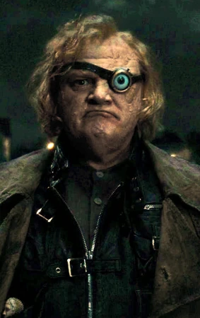
ALASTOR "MAD-EYE" MOODY
Alastor "Mad-Eye" Moody was the most fearsome Auror of his generation, legendary for his paranoia, battle scars, and the distinctive magical eye that could see in all directions. His motto, "Constant Vigilance," became synonymous with magical combat readiness and his obsessive attention to defense. Beneath his crusty exterior lay an unwavering commitment to justice and protection.
Moody's career defending the wizarding world had left him hardened and suspicious, yet he remained loyal to Dumbledore and the Order's mission. His apparent betrayal when impersonated by Barty Crouch Jr. throughout a critical year proved that even the most vigilant can be deceived. Despite this violation, Moody continued serving the Order, proving that vigilance and persistence could overcome even grave deceptions.
NYMPHADORA TONKS
Nymphadora "Tonks" Lupin was a Metamorphmagus and talented Auror whose bubbly, clumsy exterior belied considerable magical skill and perceptiveness. Her natural talent for transformation magic made her invaluable to the Order, and her genuine warmth and humor made her beloved by those who knew her. Her relationship with Remus Lupin blossomed into genuine love, though tinged with his persistent self-doubt.
Tonks's death during the Battle of Hogwarts, alongside her husband Remus, deprived their newborn son Teddy of his parents. Yet her sacrifice ensured his survival and freedom in a world free from Voldemort's tyranny. Her life demonstrated that joy and strength could coexist, and that loving deeply made sacrifice meaningful rather than tragic.
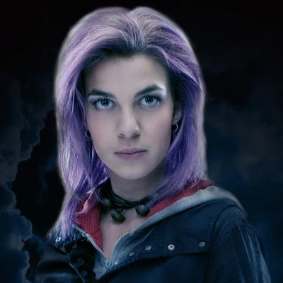
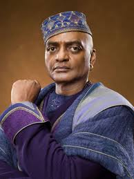
KINGSLEY SHACKLEBOLT
Kingsley Shacklebolt was a high-ranking Auror of quiet competence and unwavering integrity. His deep, powerful voice commanded respect, and his actions demonstrated consistent loyalty to justice over political expediency. Assigned to protect the Muggle Prime Minister, Kingsley operated at the intersection of the Muggle and magical worlds, exemplifying the best of wizard-Muggle cooperation.
Following Voldemort's final defeat, Kingsley was appointed Minister for Magic, bringing genuine competence and moral authority to the position. His elevation symbolized the wizarding world's turn toward healing and reconstruction, representing hope that those who had fought against darkness could build a better future. His leadership demonstrated that the battle's survivors possessed the wisdom to govern well.
ARTHUR WEASLEY
Arthur Weasley was the paterfamilias of a large, poor, but intensely loving family. His genuine fascination with Muggle technology and culture, displayed through his tinkering and questions, revealed an open-minded spirit uncommon in pure-blood wizarding families. His work at the Ministry, despite its modest salary, never diminished his kindness or his commitment to his family.
Arthur's character demonstrated that true nobility comes from moral conviction rather than blood purity or wealth. He sacrificed his safety and comfort to support the Order's fight against Voldemort, driven by love for his children and faith in Dumbledore's vision of a just world. His near-fatal encounter with Voldemort's snake Nagini showcased his vulnerability, but also his resilience in the face of unimaginable odds.
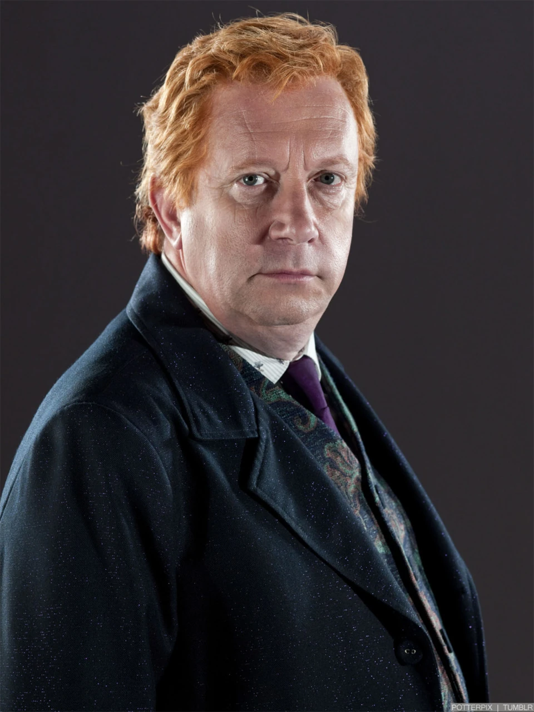
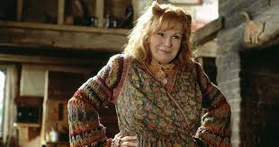
MOLLY WEASLEY
Molly Weasley was the maternal heart of the Order of the Phoenix and the matriarch of a family that represented everything Voldemort despised. Her unconditional love for her large brood, including adopted son Harry, provided the emotional foundation that made sacrificial resistance possible. Though domestic and nurturing, Molly was also an exceptionally skilled duelist, proving that nurturance and power were not mutually exclusive.
In the final battle, Molly's protective fury as a mother transformed her into an avenging force, particularly when she defeated the sadistic Bellatrix Lestrange to protect her daughter Ginny. Her act demonstrated that the fiercest magic flows from love for one's family, and that even those whose lives centered on care and sustenance could become formidable warriors when those they loved were threatened.
MADAME OLYMPE MAXIME
Madame Maxime was the formidable Headmistress of Beauxbatons Academy of Magic and a half-giant of considerable height and magical ability. Despite her imposing physical presence, she possessed diplomatic skill and genuine commitment to international magical cooperation and peace. Her role as an educator gave her credibility and influence among the magical community.
Maxime's collaboration with Hagrid to negotiate with giants demonstrated her willingness to risk her own standing for the greater good. Her work brokering peace and cooperation between different magical communities helped forge the alliances that ultimately proved crucial to defeating Voldemort's forces.
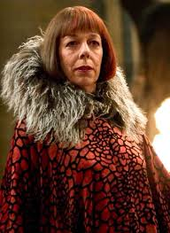
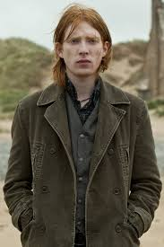
BILL WEASLEY
Bill Weasley was the oldest of the Weasley children, a talented Curse Breaker for Gringotts who combined intellectual prowess with practical magical skill. His work breaking protective magical enchantments made him invaluable to the Order's efforts against Voldemort's defenses. His commitment to both duty and love was demonstrated when he married Fleur Delacour despite the physical scars inflicted by Fenrir Greyback's savage attack.
Bill's strength and resilience, tested by the werewolf attack that left permanent marks upon him, showcased his unbreakable spirit. Rather than being diminished by his injuries, he integrated them into his identity and continued serving the cause of justice. His marriage to Fleur represented the healing and hope that could follow even traumatic violence.
CHARLIE WEASLEY
Charlie Weasley chose a path less conventional than many of his siblings, dedicating himself to the study and care of dragons in Romania. His passion for these magnificent creatures and his expertise in magical beasts made him an invaluable asset to the Order when dragons and dragon riders were needed for the final confrontation with Voldemort.
Charlie's willingness to leave his beloved work caring for dragons to fight in the final battle demonstrated the universal commitment that Voldemort's threat inspired. His knowledge of magical creatures and his ability to command respect among those creatures added a crucial element to the Order's arsenal, proving that expertise in seemingly non-combat fields could become critical to victory.
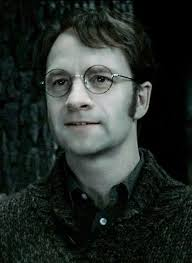
JAMES POTTER
James Potter was a talented wizard and dedicated Order member who showed extraordinary magical ability and conviction. As a Marauder, he mastered the complex magic of becoming an Unregistered Animagus (taking the form of a stag), demonstrating both intellectual prowess and determination. Despite youthful arrogance, he matured into a principled fighter willing to sacrifice everything for the resistance against Voldemort.
James defied Voldemort three times, earning his place as one of the Dark Lord's most determined opponents. In his final act, he died protecting his wife and son, his sacrifice creating the ancient magic that preserved Harry's life. His death marked the beginning of Harry's heroic journey and embodied the ultimate sacrifice a parent can make for their child.
LILY POTTER
Lily Potter was a brilliant witch and Order member who possessed rare magical talents and exceptional moral character. Born a Muggle-born, she transcended prejudice to become one of the most respected witches of her generation. Her mastery of magical theory and her deep understanding of love magic proved instrumental to her family's salvation.
Lily's sacrifice defined the entire wizarding war and fundamentally shaped its conclusion. Her willing death to protect her infant son created a powerful protective charm that saved Harry from Voldemort's curse. This act of maternal love proved more powerful than any Dark magic, ensuring that Harry carried within him a protection against the Dark Lord's power. Her legacy lived on not only in Harry's survival but in the very magic that enabled the final victory.
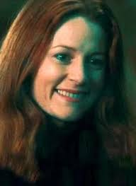
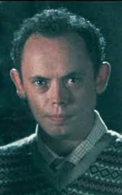
FRANK LONGBOTTOM
Frank Longbottom was a formidable Auror and courageous Order member who fought with distinction during the First Wizarding War. His dedication to justice and his willingness to face Voldemort directly demonstrated his moral courage and magical skill. Frank defied Death Eaters even knowing the personal cost such resistance might exact.
The torture Frank and his wife Alice endured at the hands of Bellatrix Lestrange and her accomplices proved devastating beyond measure. The Cruciatus Curse, applied repeatedly until the breaking point of the human mind, left Frank permanently incapacitated, unable to recognize his own son. His tragic fate served as a haunting reminder of the war's psychological weapons and the lasting scars that violence inflicts long after the physical battle ends.
ALICE LONGBOTTOM
Alice Longbottom was an accomplished Auror and skilled duelist whose magical talent and courage made her a formidable opponent to Dark forces. She and her husband Frank fought side by side against Voldemort's followers, their partnership exemplifying the strength that genuine love and shared conviction could provide in the face of darkness.
Alice's torture at the hands of Death Eaters subjected her to magical violence so severe that her mind shattered under the strain. Like her husband, she was condemned to St. Mungo's Hospital, her consciousness ravaged beyond repair. Yet even in her altered state, her love for her son Neville endured, a testament to the indomitable power of maternal bonds that transcended even psychological destruction.
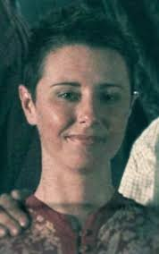
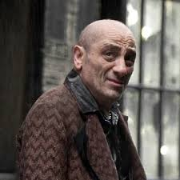
MUNDUNGUS FLETCHER
Mundungus Fletcher was an Order member whose unreliability and involvement with petty criminal enterprises made him a questionable ally, yet his contributions to intelligence gathering proved surprisingly valuable. Despite his character flaws and tendency to disappear under pressure, Fletcher possessed street-level knowledge of the wizarding underworld that more respectable members lacked.
Fletcher's defection during the attack on 12 Grimmauld Place demonstrated his willingness to abandon his comrades when self-preservation seemed imperative. Yet despite this weakness, his information and network of contacts occasionally provided crucial intelligence. His arc exemplifies how even flawed individuals can contribute to greater causes, even if only inconsistently.
ARABELLA FIGG
Arabella Figg was a Squib living near Privet Drive, her magical powerlessness making her an invisible guardian for Harry Potter. Despite lacking magical ability herself, she provided invaluable intelligence and surveillance from her unique position within the Muggle world near the Dursleys. Her willingness to operate in obscurity, watching over a boy she barely knew, demonstrated genuine heroism.
Figg's testimony at Harry's trial regarding the Dementor attack near Privet Drive proved crucial in establishing his innocence. Her courage in defying Ministry authority and speaking truth to power showed that heroism came in many forms, and that those without magic could still make profound contributions to the fight for justice.
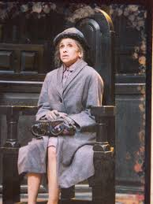
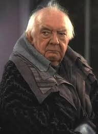
ELPHIAS DOGE
Elphias Doge was a steadfast lifelong companion of Albus Dumbledore who maintained unwavering loyalty through decades of friendship. His dedication to Dumbledore extended beyond personal affection to a commitment to the principles Dumbledore embodied. Doge's presence as a link to Dumbledore's past provided continuity and historical perspective to the Order's mission.
Through both wizarding wars, Doge endured with characteristic quiet reliability, refusing to be swayed by rumors or doubts about his friend's integrity. His survival and continued advocacy demonstrated the power of steadfast loyalty and the importance of those who remember and honor those who came before them.
EMMELINE VANCE
Emmeline Vance was a dedicated Order member who demonstrated consistent bravery through her willingness to undertake dangerous assignments. Her frequent participation in guard duties protecting key locations placed her in constant danger from Death Eater surveillance and assassination attempts. Her commitment to the Order's mission never wavered despite the escalating personal risk.
Vance's murder by Death Eaters exemplified the casual brutality of Voldemort's regime and the price that those who actively resisted had to pay. Her death represented one of many losses the Order sustained, yet her willingness to serve knowing the likely cost demonstrated the moral courage that characterized the best of the resistance movement.
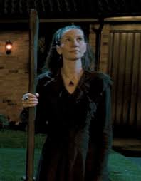
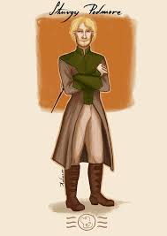
STURGIS PODMORE
Sturgis Podmore was an Order member whose willingness to infiltrate and guard the Department of Mysteries placed him at the very heart of Voldemort's operations. His position provided crucial intelligence about the Ministry's deepest secrets and the Dark Lord's plans. Despite the extreme danger inherent in his work, Podmore maintained his commitment to the cause.
When the corrupted Ministry manufactured false charges against Podmore and imprisoned him in Azkaban, his Order membership offered little protection or support from state power run amok. Yet even facing imprisonment, Podmore remained loyal to the resistance, choosing principle over survival. His capture demonstrated the Ministry's desperation to silence Order members operating within government institutions.
HESTIA JONES
Hestia Jones was an Order member characterized by quiet competence and reliable dedication. Her assignment to escort the Dursleys to safety demonstrated the trust placed in her despite her relative obscurity within the larger Order structure. Jones approached her duties with professionalism and genuine concern for those she protected.
Jones's survival of the wizarding war, while many of her more prominent comrades fell, testified to her careful judgment and practical wisdom. Her willingness to work in supporting roles without seeking recognition exemplified the quiet heroism that sustained the resistance. Such dedication, though less celebrated than dramatic battlefield triumphs, proved equally essential to the Order's survival and eventual victory.
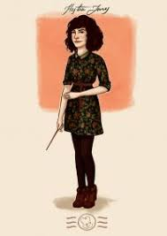
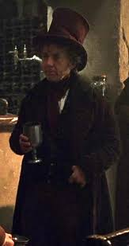
DEDALUS DIGGLE
Dedalus Diggle was an eccentric but enthusiastic Order member whose genuine passion for the cause compensated for any limitations in tactical acumen. His public celebration of Harry's survival as an infant demonstrated his emotional investment in the resistance's symbolic importance, even if his actions sometimes veered toward the theatrical.
Diggle's participation in protecting the Dursleys alongside other Order members revealed his willingness to undertake unglamorous but necessary work. His eccentricity and genuine kindness made him a beloved figure within the Order community, demonstrating that the resistance welcomed individuals of diverse personalities united by common purpose.